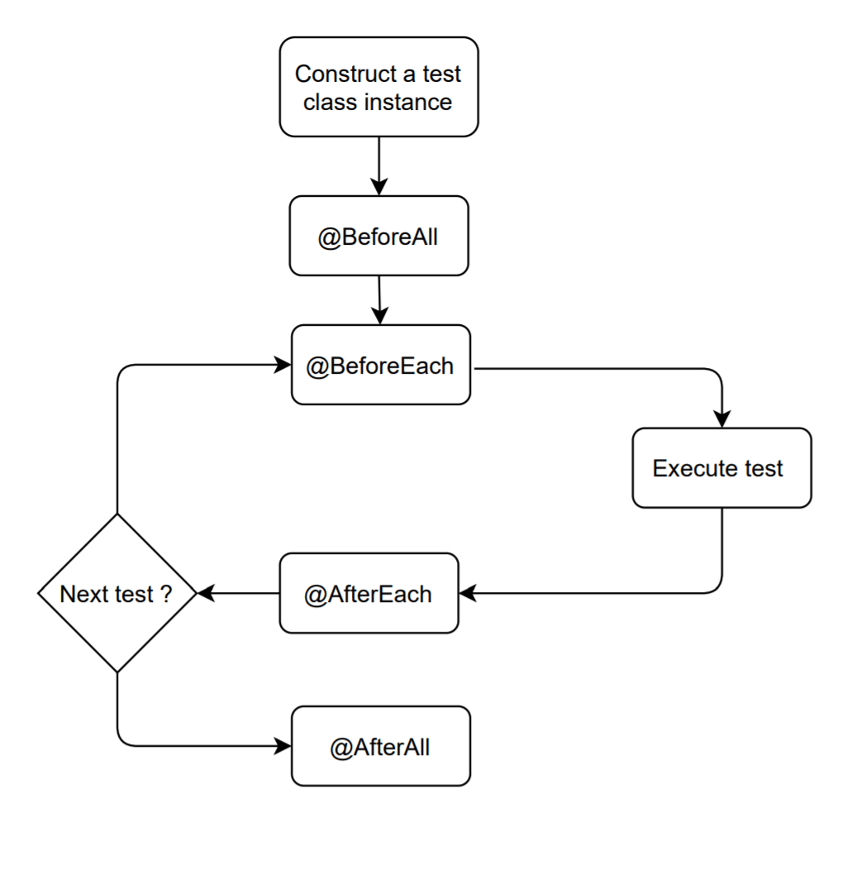
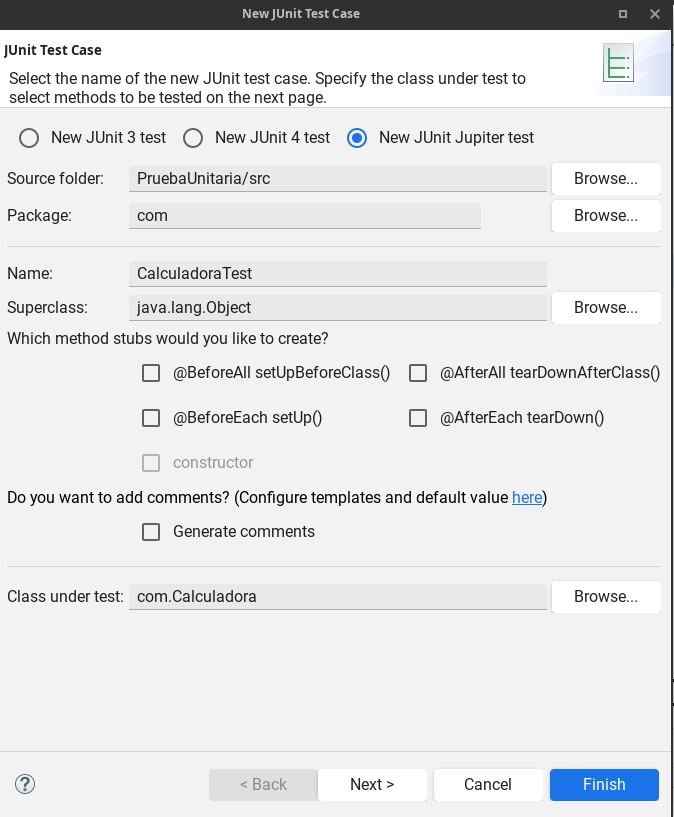

1. ¿Qué vamos a hacer hoy?
Imagina que eres desarrollador web en una empresa. Cada día escribes funciones en Java que luego se usarán en aplicaciones web (por ejemplo, con Spring Boot). Si una función falla, puede fallar toda la web.
Para evitarlo, usamos pruebas unitarias: pequeños programas que comprueban automáticamente si nuestras funciones hacen lo que deben.
- JDK 17 (o similar) instalado.
- Un IDE: IntelliJ, Eclipse o VS Code con extensión Java.
- Maven o Gradle (en muchos IDE viene ya configurado).
- Ganas de aprender 🧠.
2. Recordatorio rápido de Java básico
Vamos a crear una clase con funciones estáticas simples (sin objetos ni POO avanzada) para tener algo que probar.
CalculadoraBasica.java
public class CalculadoraBasica {
public static int sumar(int a, int b) {
return a + b;
}
public static int restar(int a, int b) {
return a - b;
}
public static int multiplicar(int a, int b) {
return a * b;
}
public static int dividir(int a, int b) {
// Versión sencilla: asumimos que b != 0
return a / b;
}
}
3. Introducción a JUnit 5 y sus etiquetas
JUnit es el framework estándar en Java para hacer pruebas unitarias. Nos permite definir funciones especiales que el framework ejecuta automáticamente para comprobar nuestro código.
3.1. Tabla de etiquetas básicas de JUnit 5
| Etiqueta | Cuándo se ejecuta | Para qué sirve |
|---|---|---|
@Test |
Cada vez que se ejecuta un test. | Marca una función como prueba unitaria. |
@BeforeAll |
Una vez, antes de todos los tests. | Preparar recursos globales (BD, ficheros, etc.). |
@AfterAll |
Una vez, después de todos los tests. | Limpiar o cerrar recursos globales. |
@BeforeEach |
Antes de cada test. | Inicializar datos para ese test. |
@AfterEach |
Después de cada test. | Restaurar o limpiar datos usados en el test. |
@Disabled |
- | Desactivar temporalmente un test. |
4. Ejemplo completo de pruebas con JUnit

Vamos a crear ahora una clase de pruebas llamada
CalculadoraTest. Recuerda: no vamos a crear objetos,
solo llamaremos a las funciones estáticas de
CalculadoraBasica.
CalculadoraTest.java
import static org.junit.jupiter.api.Assertions.*;
import org.junit.jupiter.api.*;
public class CalculadoraTest {
@BeforeAll
static void iniciarTodo() {
System.out.println(">>> Iniciando batería de pruebas");
}
@AfterAll
static void finalizarTodo() {
System.out.println(">>> Pruebas finalizadas");
}
@BeforeEach
void antesDeCadaTest() {
System.out.println("Preparando test...");
}
@AfterEach
void despuesDeCadaTest() {
System.out.println("Limpiando...");
}
@Test
void probarSuma() {
int resultado = CalculadoraBasica.sumar(2, 3);
assertEquals(5, resultado, "La suma debería ser 5");
}
@Test
void probarResta() {
int resultado = CalculadoraBasica.restar(10, 4);
assertEquals(6, resultado, "La resta debería ser 6");
}
@Test
void probarMultiplicacion() {
int resultado = CalculadoraBasica.multiplicar(3, 4);
assertEquals(12, resultado, "La multiplicación debería ser 12");
}
@Disabled("Ejemplo de test desactivado")
@Test
void testDeshabilitado() {
fail("Este test NO se ejecuta porque está @Disabled");
}
}
assertEquals?
Comprueba que el valor esperado y el valor real sean iguales. Si no lo son, el test falla.
assertEquals(5, resultado, "Mensaje si falla");
Primer parámetro: esperado. Segundo: real. Tercero: mensaje de error.
@BeforeAll→ una vez.- Para cada test:
@BeforeEach@Test@AfterEach
@AfterAll→ una vez al final.
5. Cómo ejecutar los tests en tu IDE
5.1. Crear proyecto con soporte JUnit
- Crear un nuevo proyecto Maven/Gradle en el IDE.
- Asegurarte de añadir la dependencia de JUnit 5 (muchos IDE lo añaden al marcar “Include tests”).
- Crear el archivo
CalculadoraBasica.javaensrc/main/java. - Crear el archivo
CalculadoraTest.javaensrc/test/java.
5.2. Ejecutar las pruebas
-
En IntelliJ: clic derecho sobre la clase
CalculadoraTest→ Run 'CalculadoraTest'. - En Eclipse: clic derecho sobre el proyecto o la clase de test → Run As → JUnit Test.
-
Desde línea de comandos (Maven):
mvn test
esPar(int n) en CalculadoraBasica y crea
al menos dos tests en CalculadoraTest:
uno donde el resultado sea true y otro donde sea
false.
6. Entrega de la actividad en Moodle
6.1. Qué debe incluir el archivo comprimido
- La clase
CalculadoraBasica.javacon todas las funciones implementadas. - La clase de pruebas
CalculadoraTest.javacon los tests funcionando. -
Toda la estructura del proyecto (carpetas
src/main/javaysrc/test/java). -
Opcional: un archivo
README.txtexplicando brevemente qué has probado.
6.2. Cómo crear el .zip del proyecto
- Cerrar el IDE para evitar archivos bloqueados.
-
Localizar la carpeta del proyecto en tu sistema de archivos
(por ejemplo,
Documentos/Java/PruebaJUnit). - Hacer clic derecho sobre la carpeta del proyecto y seleccionar “Enviar a → Carpeta comprimida (.zip)” (en Windows) o “Comprimir” (en Linux/Mac).
-
Renombrar el archivo con el formato:
Apellido1_Apellido2_Nombre_JUnit.zip
6.3. Subida del archivo a Moodle
- Entrar en la asignatura correspondiente en Moodle.
- Abrir la tarea titulada, por ejemplo, “Actividad: Primera clase Java + JUnit”.
- Hacer clic en “Agregar entrega”.
- Arrastrar el archivo
.zipa la zona de subida o seleccionarlo desde el explorador de archivos. - Guardar los cambios y comprobar que el archivo se ha subido correctamente.
- Has visto cómo se estructura un pequeño módulo de funciones en Java.
- Has conocido las anotaciones básicas de JUnit 5 y su orden de ejecución.
- Has ejecutado (o estás a punto de ejecutar) tu primera batería de tests.
- Sabes cómo comprimir tu proyecto y entregarlo en Moodle en un archivo .zip.
En las siguientes clases conectaremos estas ideas con aplicaciones web en Java (por ejemplo, controladores que llaman a estas funciones probadas).